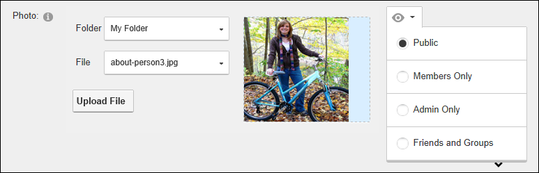

Managing your Profile Photo
How to manage the photo associated with your user profile.
- Login to the site. See "Logging into a Site"
- Click on your Display Name (typically located in the top right corner of the site) - OR - Navigate to a ViewProfile module. This displays the user profile page.
- Click the Edit Profile button.
- Go to the Profile Basic Settings section of the Manage Profile tab.
- Scroll down to the Photo field and then perform one of the following actions:
Uploading a New Image
- Click the Upload File button and then select the file from your computer.
- This displays the selected image beside the Photo field.
-
- Select the photo from the File drop down list. This displays the image to the right of this field.
- Optional. This photo is set as visible to the public by default, however you can increase your privacy by changing the visibility of this field.
Selecting a Previously Uploaded Image
- At File, select the required photo from the drop down list. This displays the image to the right of this field.
-
Removing your Profile Image
- At File, select < None Specified >.
-
Setting Image Privacy
Your photo is displayed on your user profile and on the Members Directory module by default. To change the privacy of your image, click the Visibility  button and choose from these options:
button and choose from these options:
- Public: Select to set a field as visible to any site visitor or member who can view your user profile.
- Members Only: Select to set a field as visible to all authenticated site members.
- Admin Only: Select to set a field as visible to Administrators only.
- Friends and Groups: Select to set a field as visible to your friends and the members of all social groups you have joined. You can further refine this setting by select either Friends or Followers.
